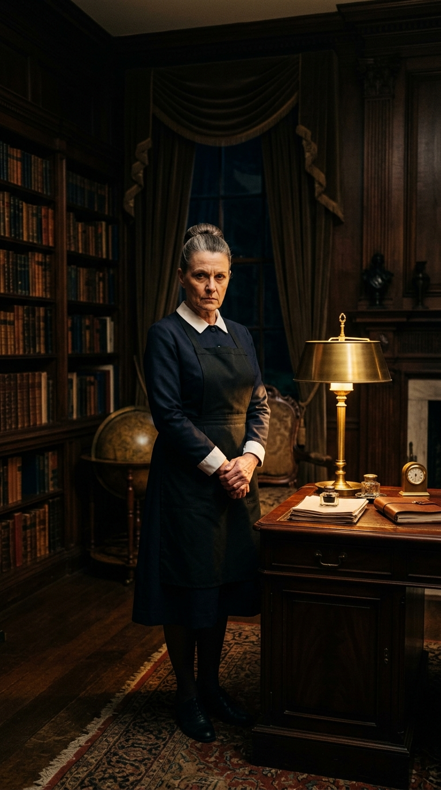

Historias crudas, dilemas morales y verdades que salen a la luz.
El Precio del Silencio

La señora Elena, encargada del servicio en la inmensa mansión de los Valeriano, conocía cada rincón de la casa, pero sobre todo, conocía sus secretos más oscuros. Durante años, mientras limpiaba el polvo de las estanterías de la biblioteca, fue testigo de cómo su empleadora ocultaba sobres llenos de dinero en el doble fondo de un mueble antiguo, fruto de negocios ilícitos y conspiraciones que desangraban a empresas locales. Elena vivía en una constante tensión; el miedo a ser despedida luchaba contra su creciente náusea moral al ver la soberbia con la que la familia aparentaba una rectitud que no poseía. Guardar ese secreto se convirtió en una carga insoportable, una cadena que la ataba a una lealtad mal entendida hacia quienes no merecían ni un gramo de su respeto. Cada noche, al llegar a su pequeña habitación, se preguntaba si su silencio la hacía tan culpable como los dueños de la casa, o si, en realidad, estaba atrapada en un juego de poder donde el único premio era la supervivencia diaria. La pregunta no era solo qué haría con el dinero, sino hasta cuándo podría soportar la mirada de sus propios hijos sin sentirse una cómplice del mal.
Caudy Ruiz
Autor de Entre Sombras y Luz
La Herencia Oculta
Cuando el abogado leyó el testamento frente a la familia, todos esperaban cifras astronómicas y propiedades en la costa. Sin embargo, cuando el nombre del hijo menor fue pronunciado, lo único que le entregaron fue un sobre lacrado con una dirección en una ciudad olvidada, casi borrada del mapa. Al llegar a aquel lugar, una casa desvencijada, no encontró lingotes de oro, sino una vieja libreta de apuntes que documentaba minuciosamente el sufrimiento de decenas de personas a las que su padre había arruinado a sangre fría para construir su imperio. Cada página era una confesión, un mapa de la codicia que había forjado la fortuna que él había disfrutado sin sospechar nada. Entendió, con el corazón roto, que la verdadera herencia que su padre le dejaba no era el dinero, sino la deuda moral de reparar cada vida destruida. Aquel joven se encontraba ahora ante el abismo: ¿podría vivir el resto de su vida con el peso de los pecados de su progenitor, o tendría que renunciar a todo lo que conocía para buscar una redención que quizás nunca llegaría a completar del todo?
Caudy Ruiz
Autor de Entre Sombras y Luz